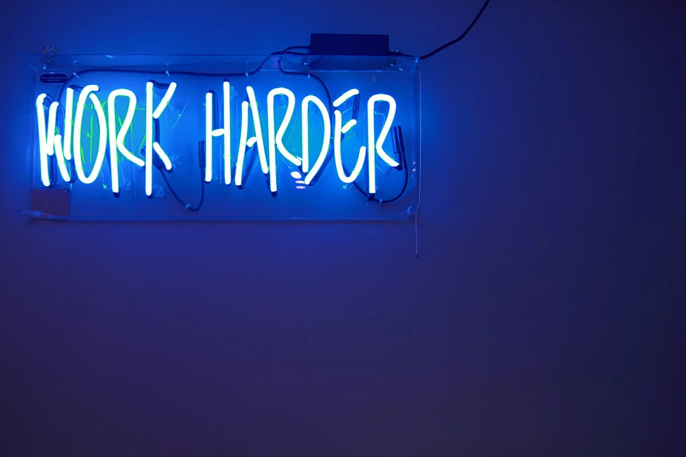

Los CEO cada vez exigen más horas de trabajo mientras los empleados valoran tener más ocio: la IA tiene mucha culpa en ambos
La inteligencia artificial está modificando la relación entre productividad, tiempo libre y expectativas laborales.

La expansión de la inteligencia artificial está transformando profundamente la cultura laboral moderna. Mientras muchas empresas utilizan IA para aumentar la productividad, numerosos trabajadores esperan que estas herramientas les permitan reducir cargas y ganar tiempo libre.
Sin embargo, la realidad parece avanzar en otra dirección: muchos directivos consideran que si las tareas pueden realizarse más rápido, entonces los empleados deberían producir todavía más.
La visión de los CEO
Diversos ejecutivos sostienen que la IA representa una oportunidad para maximizar el rendimiento laboral y optimizar tiempos de trabajo.
“Si una tarea lleva menos tiempo gracias a la IA, las empresas esperan más productividad.”
Esto genera nuevas exigencias dentro de los equipos de trabajo y aumenta la presión sobre los empleados.
Lo que esperan los trabajadores
Muchos trabajadores, especialmente generaciones jóvenes, consideran que las herramientas de IA deberían servir para mejorar la calidad de vida y reducir el agotamiento laboral.
La posibilidad de automatizar tareas repetitivas abre el debate sobre jornadas laborales más cortas y un mayor equilibrio entre vida personal y trabajo.
El futuro del trabajo
Expertos coinciden en que la inteligencia artificial continuará modificando la manera en que trabajamos, aunque todavía existe incertidumbre sobre cómo impactará realmente en la distribución del tiempo y las exigencias laborales.
La discusión ya no gira solamente alrededor de la tecnología, sino también sobre el modelo de trabajo que las empresas desean construir.
Fuente original: Ver noticia completa